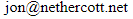

Hi, my name is Jon Nethercott, and I maintain the Nethercott.Net website.
I registered this domain back in April 2000, because I thought it would
be nice to have a domain with my name. Back then, the Nethercott "brand"
was quite rare and unique. You could search for Nethercott and only get a
few results. The last time I looked, if you search for Nethercott in Google,
you get 153,000 results! At the top of the Nethercott brand (according to Google)
you have funeral directors, a farm, an opticians, and of course the footballer Stuart Nethercott.
Sporty Nethercotts!
There are also quite a few places with the name Nethercott. There seem to be quite a lot down
in Devon, but I have also noticed that there are places in Oxford, Cornwall, and I even noticed there
was a Nethercott Close in Luton!
Places called Nethercott
From what I can make out the name Nethercott means lower house that went with the job (apparently cott isn't short for cottage as you might think). So maybe my ancestors were wealthy land owners then? Well, apparently not. Rural dwellings in those days were pretty humble afairs - the rich land owners would have lived in what they called halls.
I'll add more to this site when I get a chance, but in the meantime I can be contacted at:
